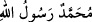
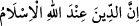

İkinci satırda: “
”
Üçüncü satırda ise: “
”
“Allah katında din İslâm’dır” ibâresi mevcûddu. (Âl-i İmran 3/19)
el-Vâkıâtü’l-Mahmûdiyye’de şöyle der: “Müslümanlar arasında “Lâ ilâhi illallah”
kelimesi dışında her söz ihtilâf kabûl eder. Ancak bu kelime, ihtilaf kabûl etmez. Kimse
söylememiş olsa bile onun mânâsı kesindir.[162]
[157]. Buhârî, İlim, 34; Müslim, İlim, 13
[158]. Beyhakî, Delâil, III, 92
[159]. Buhârî, Ezan, 5
[160]. Buhârî, Cihâd, 71, 74, Etıme, 28; Müslim, Hac 462, 462, 503-504; İbn Mâce,
Menasik, 104; Muvatta, Medine, 10; Müsned, II, 337, 387; III, 140, 149
[161]. Beyhakî, Delâil, V, 489
[162]. Ra‘d sûresi, 21 Şevval 1103 hicri (6 Temmuz 1692) tarihinde tamam oldu.